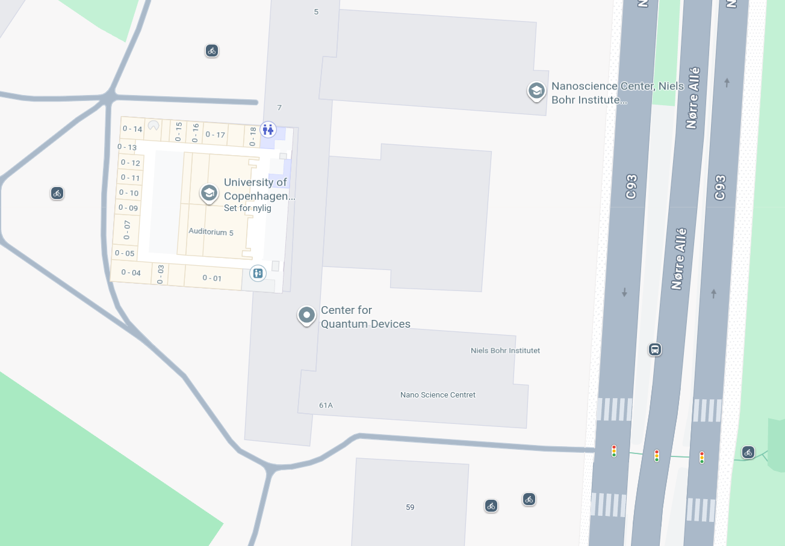
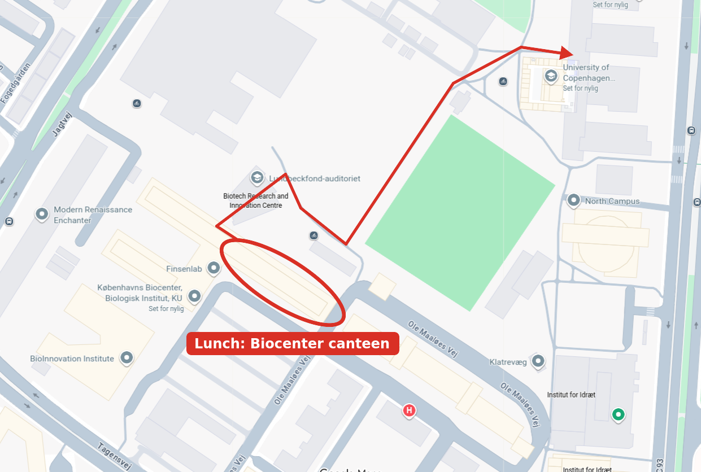

Thursday 12 November 2026, University of Copenhagen
Photo: Øresund Bridge, Malmö by Richard Dennis, CC BY 2.0.
ARCO (Algorithmic Research Cooperation around Øresund) is a recurring one-day meeting for researchers working on algorithms in the Øresund region. It takes place once or twice a year and moves between universities in the region. This fall it is hosted by BARC at the University of Copenhagen. Everyone interested in algorithms is welcome, including students.
Registration is done through this form. If you would like to give a talk, you can indicate this in the same form.
| 09:30–09:55 | Arrival |
| 09:55–10:00 | Welcome |
| 10:00–11:10 |
Automata, Strings and Certified Solving
|
| 11:10–11:30 | Break |
| 11:30–12:40 |
Complexity Theory
|
| 12:40–13:50 | Lunch break (Biocenter canteen) |
| 13:30–13:50 | Business meeting (senior researchers should attend) / break (everyone else) |
| 13:50–15:00 |
Geometry and Covering
|
| 15:00–15:20 | Break |
| 15:20–16:30 |
Algorithms with Noisy Information
|
Thursday 12 November 2026
Auditorium 5, H. C. Ørsted Institut

Lunch (12:40–13:50) will be in the canteen of the Biocenter, a short walk from the H. C. Ørsted Institute.
